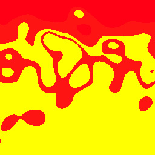

Evolutionary art project in Clojure
This project is an attempt to implement some of the work described in Karl Sims' 1991 SIGGRAPH paper Artificial Evolution for Computer Graphics. It is also my vehicle for learning Clojure. The code evolves along with my understanding of functional programming.
Sample usage code is in a comment at the bottom of core.clj.
There exists a previous version in the haXe language, with its own simple parser and interpreter for Lisp s-expressions.
As of 1 Jan 2013 Clevolution has taken a great leap forward onto the shoulders of Clisk, the Clojure Image Synthesis Kit by Mike Anderson, taking advantage of its wide variety of image-processing operations and fast processing.
Sometimes a generated image will suggest expansion of its canvas via clisk's scale operator to achieve coolness:

Copyright (C) 2012-2013 Alan Shaw Distributed under the Eclipse Public License, the same as Clojure.